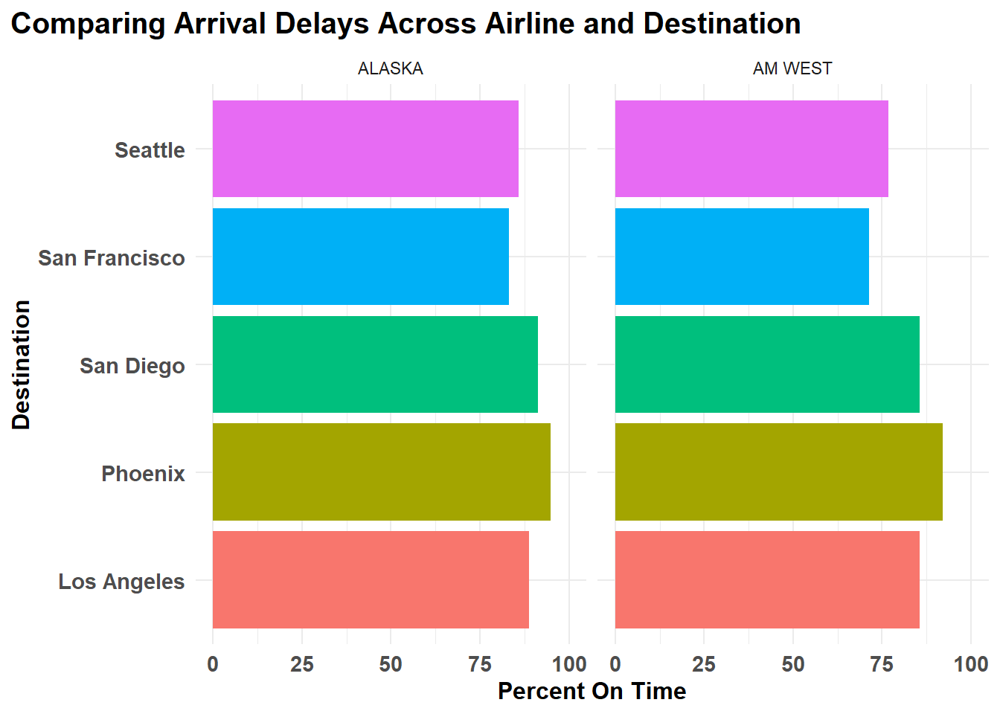
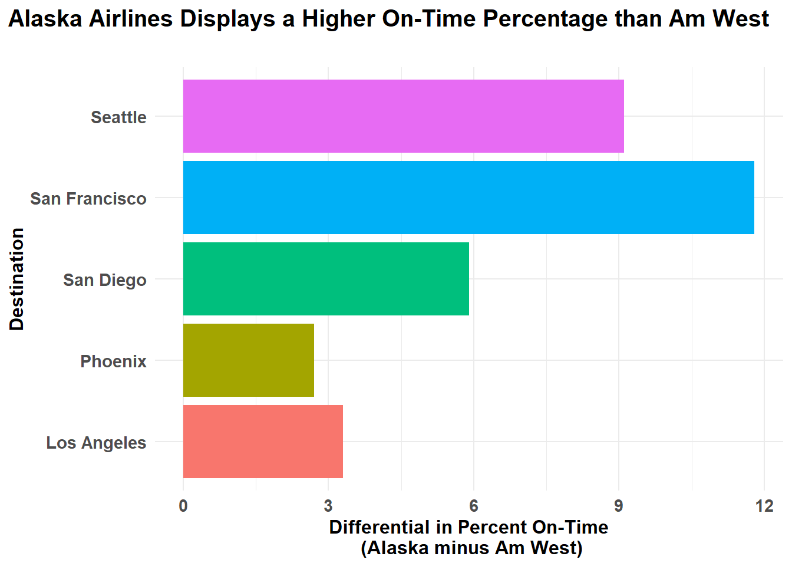
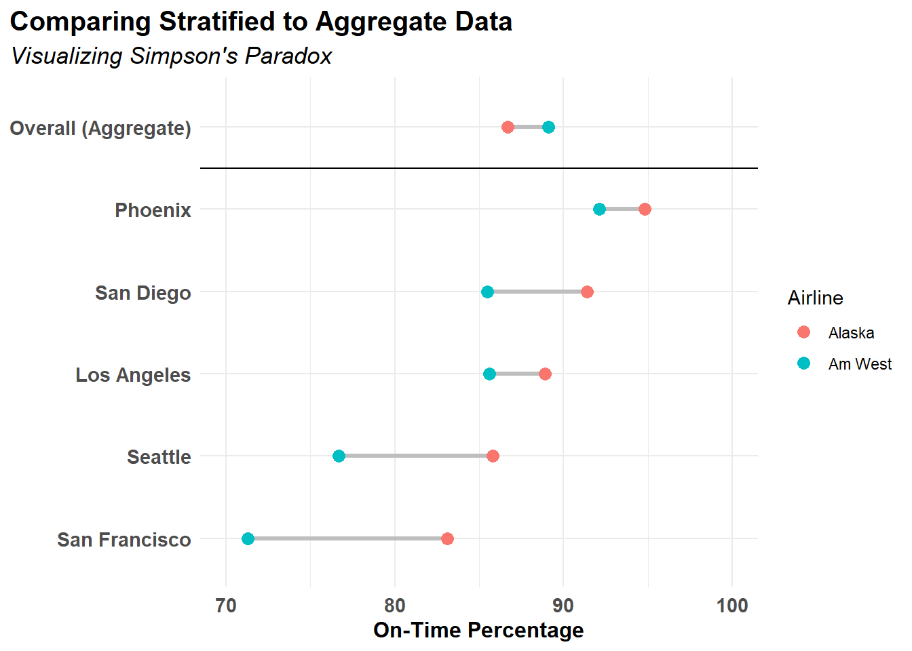

library(tidyverse)
url <- "https://raw.githubusercontent.com/kailot-harris/DATA-607-Assignment-5A/refs/heads/main/numberverse.csv"
csv_data <- readr::read_csv(file = url,
show_col_types = FALSE,
progress = FALSE)
clean_data <- csv_data |>
fill(airline, .direction = "down")DATA 607 - Assignment 5A - Codebase
Introduction and Overview
Data is provided in the form of a formatted table with frequencies of on-time and delayed arrivals. An initial goal of this work is to accurately store this information in a .CSV file. Next, the .CSV file will be read into R using the readr package’s read_csv() function. The tidyr and dplyr packages will be utilized to tidy and transform data. Arrival delay information will be compared across airlines and visualized.
Anticipated challenges in this assignment include working with missing data, tidying and transforming the data frame appropriately, and drawing comparisons between airlines and destinations. This work will endeavor to answer whether the on-time-rate winner changes between a city-by-city comparison and an overall comparison.
Codebase
Data Import
Data is fetched from a github-hosted .CSV file containing the relevant data. Next, missing airline data is imputed using the fill() function from within the tidyverse. The results of the fill() operation were manually inspected for correctness.
Data Tidying
Pivoting Longer
An initial step in data tidying is pivoting the data frame longer because important data are contained in column names (R 4 Data Science, Section 5.3.1). By converting each destination city’s column into frequency data and making a new column for destination city names, the data is prepared for further analysis.
df_long <- clean_data |>
pivot_longer(
cols = !c(airline, status),
names_to = "destination",
values_to = "frequency"
)Summarizing Data
To prepare the data for summarizing, the data frame was pivoted wider. This replaced the frequency column with two columns per unique combination of airline & destination: on_time and delayed. From there a new column, on_time_pct, was mutated in to calculate the percent of on-time flights for each unique combination of airline & destination . The data frame was then pivoted even wider, generating unique columns for alaska and am west airlines with their respective on_time_pct calculations.
df_wide <- df_long |>
pivot_wider(
names_from = status,
values_from = frequency
) |>
janitor::clean_names()
df_summary <- df_wide |>
mutate(on_time_pct = round(100*on_time/(on_time+delayed),1)) |>
select(airline, destination, on_time_pct)
df_wider <- df_summary |>
pivot_wider(names_from = airline,
values_from = on_time_pct
) |>
janitor::clean_names() |>
arrange(desc(alaska))
knitr::kable(df_wider, caption = "Summary of Data")| destination | alaska | am_west |
|---|---|---|
| Phoenix | 94.8 | 92.1 |
| San Diego | 91.4 | 85.5 |
| Los Angeles | 88.9 | 85.6 |
| Seattle | 85.8 | 76.7 |
| San Francisco | 83.1 | 71.3 |
Visualizing Data
To view the aggregate level summaries, the df_wide data frame is reused and summary statistics are summarized into the new frame, df_sum. From there, the percent of on time flights for each airline, aggregated across destinations, is computed.
df_sum <- df_wide |>
group_by(airline) |>
summarize(
tot_on_time = sum(on_time),
tot_delayed = sum(delayed),
pct_on_time = round(100*tot_on_time / (tot_on_time+tot_delayed),1)
) |>
select(airline, pct_on_time)
df_combined <- bind_rows(df_summary |>
mutate(destination = str_to_title(destination)),
df_sum |>
rename(on_time_pct = pct_on_time) |>
mutate(destination = "Overall (Aggregate)"))
df_combined <- df_combined |>
mutate(airline = str_to_title(airline),
destination = factor(destination, levels = c("San Francisco", "Seattle", "Los Angeles", "San Diego", "Phoenix", "Overall (Aggregate)")))
df_viz <- df_wider |>
mutate(diff = alaska - am_west) |>
select(destination, diff)df_summary |>
ggplot(aes(x=destination,
y=on_time_pct,
fill=destination)) +
facet_wrap(~airline) +
geom_col(show.legend = FALSE) +
coord_flip() +
scale_y_continuous(limits = c(0,100)) +
labs(title = "Comparing On-Time Rates Across Airline and Destination",
x="Destination",
y="Percent On Time") +
theme_standard()
df_viz |>
ggplot(aes(x=destination, y=diff, fill=destination)) +
geom_col(show.legend = FALSE) +
labs(title = "Alaska Airlines Displays a Higher On-Time Percentage than Am West",
subtitle = "",
x = "Destination",
y = "Differential in Percent On-Time\n (Alaska minus Am West)"
) +
coord_flip() +
theme_standard()
df_combined |>
ggplot(aes(x=on_time_pct,
y = destination,
color = airline)) +
geom_line(aes(group = destination), color = "gray", linewidth = 1.2) +
geom_point(size =3) +
scale_x_continuous(limits = c(70,100)) +
labs(
title = "Comparing Stratified to Aggregate Data",
subtitle = "Visualizing Simpson's Paradox",
x = "On-Time Percentage",
y = NULL,
color = "Airline"
) +
theme_standard() +
geom_hline(yintercept = 5.5)
knitr::kable(df_sum)| airline | pct_on_time |
|---|---|
| ALASKA | 86.7 |
| AM WEST | 89.1 |
Findings and Recommendations
In this assignment a .CSV file was loaded into a data frame using read_csv() and the data frame was tidied and reorganized in several iterations. The frame was transformed wider and longer from its initial shape. In the end, the data is described in two visualizations comparing on-time rates (percentage) for five destinations across two airlines and the difference in on-time rates for the two airlines.
According to Figure 1, each airline shows on-time rates exceeding 70%, with data from all of the Alaska airline destinations exceeding 80%. Flights to Phoenix represented the highest on-time rates for both airlines, while San Francisco represented the destination with the lowest on-time rates.
In Figure 2, it is clear that Alaska airline has higher on-time percent rates than Am West airline, when the data is stratified by destination. Here, the differential for each destination (calculated as Alaska on-time rate minus Am West on-time rate) is shown, which compares the on-time rates for the airlines across all five destinations. This chart makes apparent that the largest differential in on-time rates occurs when San Francisco is the destination.
Finally, a comparison of the two airlines on aggregate statistics is presented in Table 1. This table exposes a discrepancy in the data: in Figure 1 and Figure 2 it was clear that Alaska airline outperformed Am West airline when results were dis-aggregated by destination; however, in Table 1, it is shown that Am West outperforms Alaska airline in on-time rates in aggregate. This situation is an example of Simpson’s paradox: the trend observed in the stratified data is no longer apparent in the aggregated data. This is likely due to the extreme number of on-time Am West flights to Phoenix: 4840. This likely skewed the aggregate data to show a high percentage of on-time flights for Am West.
Overall, this assignment could be extended by incorporating more data into the analysis (more airlines, more destinations, average delay times, etc.). Additionally, if historical data were available, the on-time rates for each airline could be calculated for each year or month of operation. Lastly, this assignment could be completed using a mySQL database for storage and then SQL manipulations could be practiced.